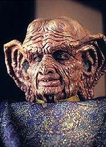
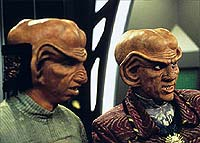
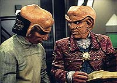
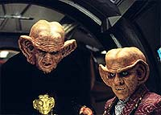
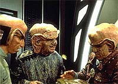

MANCHETE
DO EPISÓDIO
Fraca
comédia opta por arriscada
mistura de Ferengis e Profetas
Episódio
anterior | Próximo
episódio
Sinopse:
Data Estelar:
desconhecida.

Quark
está feliz da vida em seus aposentos, recebendo Oo-mox da mesma
bela alienígena (de nome Emi) que quer fechar um grande negócio
com ele. Eis que Rom traz aos aposentos do irmão o Grande Nagus
Zek (com o seu servo Maihar'du), que toma posse imediata das
acomodações e se livra de toda a mobília. Algum tempo depois,
Zek revela aos irmãos que ele reescreveu as famosas "Regras
de Aquisição Ferengis" de forma que agora elas refletem
fundamentos de bondade e generosidade. Rom e Quark inicialmente
pensam que é tudo parte de algum golpe genial do seu líder. Mas
quando Zek diz a Emi onde ela pode comprar mais barato a mesma
mercadoria que o barman Ferengi havia oferecido a ela, Quark
percebe que ele está falando sério.
Ao mesmo tempo, o doutor Bashir é o mais jovem indicado de todos
os tempos para o mais importante prêmio médico da Federação, o
prêmio Carrington, anualmente concedido pelo conselho médico da
Federação. Ao contrário do que se poderia esperar, Bashir não
está muito animado com as suas possibilidades de vencer. De fato,
o prêmio Carrington é dado a médicos como o coroamento de uma
bem-sucedida carreira, quando eles já estão próximos ao final
de suas vidas.

O
Nagus estabelece uma infame "associação benevolente
Ferengi" tendo como escritório central os aposentos de Quark
e tendo Rom como administrador. Aí Quark começa a ficar
preocupado que Zek venha a ser linchado em Ferenginar, quando ele
levar de volta ao seu mundo natal as tais "regras
revisadas". Bashir examina Zek, mas não encontra nada de
errado com o líder dos Ferengis. O Nagus oferece uma barra de
latinum como "pagamento" ao doutor (que ele vai usar
para caridade) e diz que vai dar um presente ao povo Bajoriano,
mas se recusa a dizer qual.
Rom e Quark (com a inesperada ajuda de Maihar'du) entram na nave
de Zek e descobrem bem à vista um Orb Bajoriano perdido. Quando
Quark acidentalmente abre a arca do objeto, ele tem uma visão que
revela que as "novas regras" vieram de certa maneira dos
Profetas, que transformaram Zek em um tipo mais esclarecido de
Ferengi (como e por quê ainda não estão claros). Examinando os
diários da nave, eles descobrem que Zek conseguiu o Orb (da
sabedoria) em Cardássia III e entrou na Fenda Espacial na esperança
de que os Profetas lhe dessem uma visão do futuro, algo altamente
lucrativo, obviamente. Quark percebe que algo foi muito mal em tal
experiência e rapta Zek e o leva de volta em sua nave para a
Fenda Espacial.
Enquanto tudo isto acontecia, Bashir era provocado sobre as suas
possibilidades de vencer, por Dax (que havia submetido o nome de
Bashir para o prêmio sem ele saber), O'Brien (em um jogo de
dardos) e por Odo (que sugere que o doutor já estaria até
escrevendo o seu discurso de agradecimento). Mesmo com toda a
certeza de que não iria vencer, o doutor não fica nada confortável
com a anunciada derrota ao final.
Dentro da Fenda Espacial, os Profetas dizem a Quark que Zek os
perturbou bastante, com a sua natureza adversária e agressiva.
Examinando a história Ferengi, eles descobriram que aquela raça
nem sempre foi gananciosa e o "regrediram" a um Ferengi
típico daquela época e dizem que vão fazer o mesmo com Quark.
Quark diz que, se eles desfizerem o ocorrido, nenhum Ferengi os
incomodará de novo. Eles retornam Zek ao normal. Todas as cópias
das "Novas Regras de Aquisição" são destruídas e o
Nagus diz que vai vender o Orb aos Bajorianos.
Comentários:
Os produtores de DS9 não têm aqui, no (absurdo) encontro
entre Ferengis e Profetas, o mesmo sucesso do (absurdo) encontro
anterior entre os Klingons e os Ferengis (em "The
House of Quark"), mais cedo na temporada. Ainda temos
esta semana, um fiapo de história tratando da expectativa da possível
premiação de Bashir que, devido à falta de conteúdo humorístico
e de desenvolvimento do personagem do doutor, termina quase que
como um exercício em nulidade, apesar de ainda assim ser mais
agradável que a história principal. Saibam mais detalhes, sem
precisar consultar o Orb da Sabedoria no processo, nas linhas
abaixo.

O
grande problema do episódio foi fazer da condição de Zek um
"mistério" que foi desvendado a passos de cágado por
Rom & Quark, de uma forma extremamente bocejante. Os dois irmãos
demoram demais a perceber que algo está errado com Zek e ainda
mais tempo para tomar alguma atitude. Nesse meio tempo, temos
(entre outros maus elementos) uma leitura interminável das
"regras revisadas" e inúmeras cenas de gosto duvidoso,
como quando Quark lambe as laterais do livro contendo as regras.
Rom & Quark tiveram que ser escritos desta forma extremamente
idiota (o que acontece de uma forma irritantemente freqüente na série,
aliás) para não terminar o episódio antes dele começar.
Não somente a precária história é diluída pelo excesso de
tempo devotado a ela, como Quark (e também Rom, Zek e Maihar'du)
é escrito de uma forma bastante transparente, onde sabemos
claramente o que ele vai dizer e fazer muito antes de tal informação
aparecer em cena. Seria benéfico termos um agente externo (como
tivemos em Grilka e nos outros Klingons em "The
House of Quark") que trouxesse um pouco de
imprevisibilidade e mesmo trouxesse à tona algumas diferentes
facetas do Ferengi.
De fato tal agente surge (na forma dos Profetas) quase no final e
beneficia Quark na sua interação com eles, mas já era tarde
demais e ainda assim o diálogo não consegue tirar um
"payoff" satisfatório do insólito da situação. É
uma pena que uma parte tão integral da série como os Profetas
seja utilizada de forma tão mundana e inconseqüente, ainda mais
em um veículo Ferengi (especialmente no rastro do excelente "Destiny",
da semana passada).
A visão inicial de Quark também careceu de qualquer sentido mais
profundo para o personagem (como foi o caso até aqui para todos
que tiveram experiências com os Orbs --e fica difícil aceitar
que por ser um Orb diferente teríamos tal aberração de
comportamento-- é razoável que o escopo das visões mude, mas
que continuem a ressonar de uma forma pessoal), parecendo muito
mais um caso de "esquisitice pela esquisitice"(TM) com
uma explicação óbvia ao seu final do que algo com um real
significado a ser ponderado.

O
restante da história principal do episódio ainda tem Rom agindo
de forma ainda mais transparente e tola do que Quark (batendo na
arca do Orb, para ver se tem algo dentro, por exemplo), Zek com
uma voz ainda mais irritante do que de costume e Maihar'du
chorando (?) e tomando um porre (!). O leitor pode imaginar o
tamanho do "drama".
A história secundária envolvendo Bashir funciona
surpreendentemente melhor que a história principal, apesar de
também ser largamente esquecível. Ao seu favor ela tem o desejo
de tentar produzir humor de uma forma não tão óbvia e ao mesmo
tempo retratar uma situação que é absolutamente natural e
compatível com situações similares no mundo real. Infelizmente
ela também é incapaz de produzir um suficiente
"payoff" cômico e nem passa perto de oferecer alguma
perspectiva nova sobre Bashir. Ainda assim ela engloba o que o
episódio tem de melhor, além da participação dos Profetas ao
seu final (que apesar do discutível uso feito deles aqui, serve
ao menos para manter a sua presença viva na série).
A direção de estréia de Auberjonois é bastante convencional e
quadrada. Apenas na visão de Quark e no seu encontro com os
Profetas, no interior da fenda espacial, é que temos alguns
visuais interessantes. Apesar da fidelidade de tais experiências
com o que já vimos anteriormente na série ("Emissary"),
tivemos algumas derrapadas como: o efeito da cabeça de Zek dentro
da arca do Orb, o estranho efeito de Quark girando sobre a roda de
Dabo e a queda (sem jeito) de Zek do segundo nível do Quark's.
Com um material tão "peso pluma" quanto este
apresentado no episódio, fica até difícil encontrar alguma atuação
de destaque positivo ou negativo, exceto por Wallace Shawn (Zek)
que foi excessivamente irritante como um
"Proto-Ferengi". Fica a dúvida se isto foi devido às
escolhas do ator ou a orientação que recebeu, mas o resultado
final foi bastante ruim.

Nog
está em Ferenginar com a avó (Ishka), que irá aparecer na série
em breve, em "Family Business", desta mesma
temporada. O fato de Rom ter guardado na memória as tais
"Novas Regras de Aquisição" terá uma implicação
interessante quase ao final da série (ver "The Dogs of
War"). O fato de Bashir não poder fazer nada a respeito
de Zek também é consistente com o que veríamos ao longo da série
com relação aos poderes dos Profetas.
Sisko ensinou aos Profetas sobre tempo linear, vida corpórea e
comunicação lingüística. Aqui eles se referem a Sisko, pela
primeira vez na série, como "O Sisko" (em simetria com
"O Zek"). Eles se referem pela primeira vez a uma existência
linear como "O jogo". Aqui é estabelecido que eles
podem examinar o passado de outras raças, fato que será
utilizado de novo no clássico "Far Beyond the Stars",
da sexta temporada de DS9.
Durante os últimos 10 mil anos, nove Orbs foram encontrados pelos
Bajorianos (cinco no cinturão Denórios). Apenas um estava de
posse de Bajor no início da série. Os orbs (dentre tais nove)
que foram citados explicitamente em tela são os seguintes:
"O Orb da Profecia" (ou "O terceiro Orb" ou
"O Orb da Mudança" ou "O Orb da Profecia e Mudança"),
visto em "Emissary",
"The
Circle", "Destiny",
"Rapture" e "Ressurection";
"O Orb da Contemplação", visto em "Tears of
the Prophets"; "O Orb do Tempo", visto em "Trials
and Tribble-ations" e "Wrongs Darker Than Death
or Night" E "O Orb da Sabedoria", visto aqui em
"Prophet Motive" e "In the Cards".
"O Orb do Emissário" não é citado nos textos
Bajorianos (e nem é um dos nove Orbs citados acima) e foi
encontrado por Sisko em "Image in the Sand" e "Shadows
and Symbols" (sétima temporada), no planeta Tyree.
"Prophet Motive" é um outro péssimo episódio
de Deep Space Nine que passa a maior parte do tempo em um
estado de torpor quase que absoluto, dificilmente evocando
qualquer reação por parte da audiência. O fato de termos mais
uma comédia Ferengi na temporada, especialmente uma lidando com
os Profetas de Bajor, fala diretamente sobre os problemas de
direcionamento que a série enfrentou nesta terceira temporada. O
mais triste é que ainda temos mais uma comédia Ferengi se
aproximando...
Citações
Zek - "You better
hurry. I got the dampening field on this ship for a substantial
discount."
("É melhor correr. Eu comprei o amortecedor dessa nave com
um desconto substancial.")
Bashir - "April Wade is 106; the last time she was
nominated, people said it was premature! Put my name up for
nomination in seventy years and I promise you I will get very
excited."
("April Wade tem 106; da última vez que ela foi indicada, as
pessoas disseram que foi prematuro! Coloque meu nome para indicação
em setenta anos e eu prometo que vou ficar muito empolgado.")
O'Brien - "You'd rather play a game of racquetball?"
("Você prefere jogar uma partida de raquetebol?")
Bashir - "Chief, since Keiko's been on Bajor we've played
106 games of racquetball."
("Chefe, desde que Keiko foi para Bajor nós jogamos 106
partidas de raquetebol.")
O'Brien - "Right. So throw a dart."
("Certo. Então atire o dardo.")
Rom - "He [the Nagus] says I'm malleable."
("Ele [o Nagus] diz que sou maleável.")
O'Brien - "But I bet there are doctors all over the
Federation saying 'Julian Bashir? Who the hell is HE?'"
("Mas aposto que há médicos por toda a Federação dizendo
'Julian Bashir? Quem diabos é ELE?'"
Trivia:
 A vida de diretor em DS9 começou para René Auberjonois no
início da terceira temporada da série, quando Rick Berman deu
sinal verde para o ator seguir esse caminho. Desde aquele momento
ele começou a observar de perto encontros dos produtores e sessões
de edição, escolha de elenco e de dublagem, se preparando
cuidadosamente para a sua nova função. Auberjonois diz que algo
que facilitou o seu trabalho (enquanto diretor novato) foram os
intensivos ensaios conjuntos de Armin Shimermam e Max Grodénchick,
mesmo nos finais de semana, deixando tudo preparado para os dias
de filmagem.
A vida de diretor em DS9 começou para René Auberjonois no
início da terceira temporada da série, quando Rick Berman deu
sinal verde para o ator seguir esse caminho. Desde aquele momento
ele começou a observar de perto encontros dos produtores e sessões
de edição, escolha de elenco e de dublagem, se preparando
cuidadosamente para a sua nova função. Auberjonois diz que algo
que facilitou o seu trabalho (enquanto diretor novato) foram os
intensivos ensaios conjuntos de Armin Shimermam e Max Grodénchick,
mesmo nos finais de semana, deixando tudo preparado para os dias
de filmagem.
Os ensaios deram origem a diferentes idéias para tomadas,
diferentes das sugeridas nas cenas do roteiro. Por exemplo, quando
Quark e Rom lêem sobre as novas regras, e são colocados em cena
dentro da moldura da janela do quarto de Quark (a cena
originalmente tinha Rom sentado no chão, lendo, enquanto Quark
andava em volta dele). Tal janela teve de ser equipada com um
fundo de estrelas móveis especialmente para a cena. Apesar de
pequenas idéias deste tipo, Auberjonois foi bastante convencional
e formulaico a maior parte do tempo. Por exemplo, ele teve extremo
cuidado em recriar cuidadosamente os visuais das experiência com
os Profetas dentro da Fenda Espacial de "Emissary",
o piloto da série.
Um grande esforço foi tomado pela equipe de efeitos visuais e
pelo cinegrafista Jonathan West para recriar também aquele visual
particular. Cabe notar que as imagens da experiências (fantasias)
com os Profetas são produzidas compondo uma camada da cena fora
de foco sobreposta a uma camada em foco da cena. O vôo da nave de
Quark dentro da fenda foi feito com base no vôo do exlorador de
Sisko no piloto da série, tendo como fonte consulta o vídeo do
episódio. Os dados de comando numérico da tomada original foram
perdidos.
A história do episódio se baseia em "Uncle Sylvester",
um roteiro (nunca vendido) de Ira Behr (o mentor de DS9),
para o antigo sitcom da Paramount, "Taxi". O irônico é
que, apesar do desfecho do episódio desta semana, Behr e cia.
finalmente mudariam a cara da sociedade Ferengi com a participação
fundamental da mãe de Quark, Ishka (que será introduzida em "Family
Business", mais tarde nesta mesma terceira temporada) e
de seu irmão Rom, ao final da série.
A história do prêmio que não foi dado a Bashir tem origem em
uma brincadeira interna entre os produtores da série a respeito
do prêmio Emmy (o Oscar da TV) de melhor série dramática de
1994, que não foi dado a série A Nova Geração (indicada
naquela ocasião). Todos sabiam que não iria levar o prêmio
mesmo e não levou, apesar de que, em um certo momento, a certeza
da equipe começou a se transformar em um "será possível?"
(a série vencedora daquele ano acabou sendo "Picket
Fences"). O episódio também marca a introdução dos jogos
de dardos entre O'Brien e Bashir (e que logo seriam transferidos
para o Quark's) como uma alternativa para os jogos de cartas de A
Nova Geração e para a mesa de bilhar de Voyager.
Quando nós vemos um dardo atingir ao alvo, ele seguramente foi
atirado por James Lomas ou por seu reserva Shawn McConnell,
consultores do jogo para a série.
Ficha
técnica:
Escrito por Ira Steven
Behr & Robert Hewitt Wolfe
Direção de René Auberjonois
Exibido em 20/02/1995
Produção: 062
Elenco:
Avery Brooks como
Benjamin Lafayette Sisko
René Auberjonois como Odo
Nana Visitor como Kira Nerys
Colm Meaney como Miles Edward O'Brien
Siddig El Fadil como Julian Subatoi Bashir
Armin Shimerman como Quark
Terry Farrell como Jadzia Dax
Cirroc Lofton como Jake Sisko
Elenco convidado:
Max Grodénchik
como Rom
Juliana Donald como Emi
Tiny Ron como Maihar'du
Wallace Shawn como Zek
Bennet Guillory como um médico